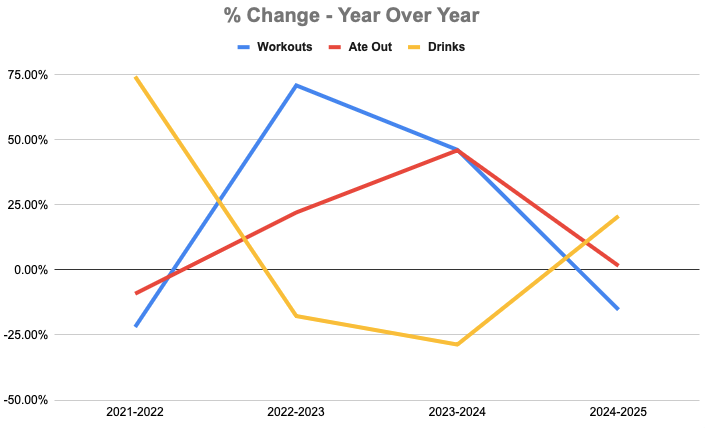
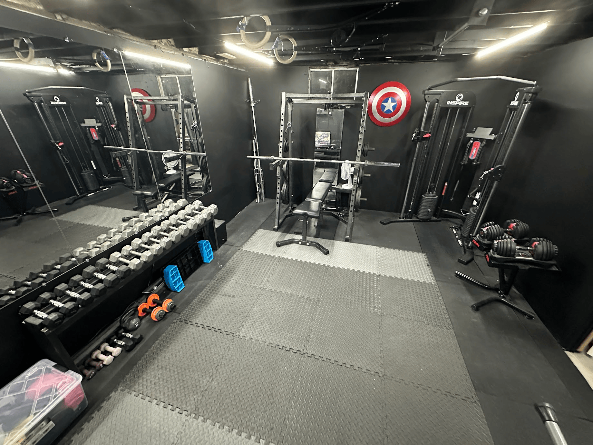
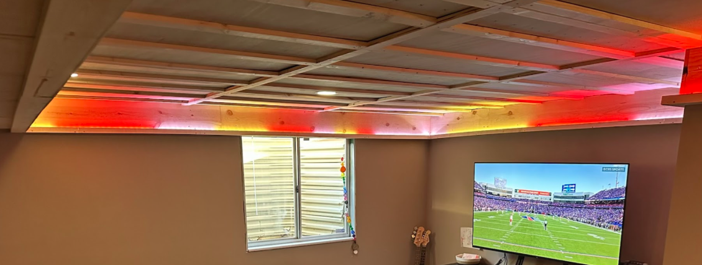
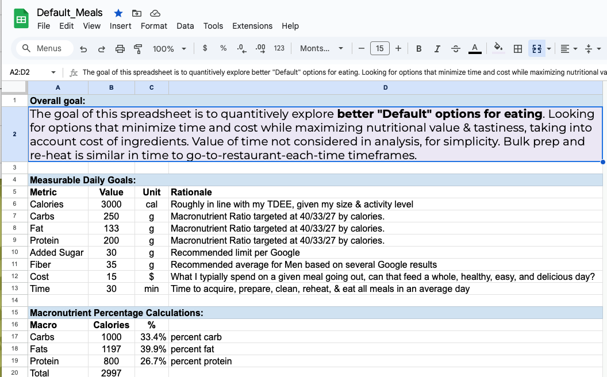
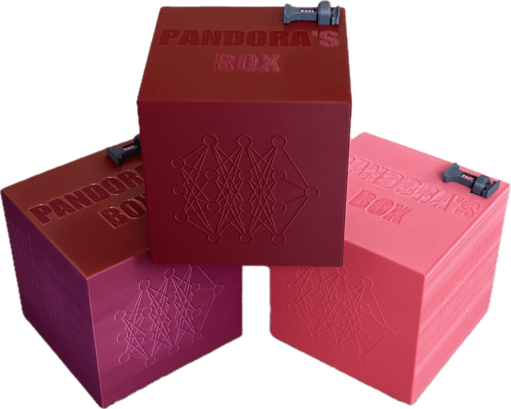
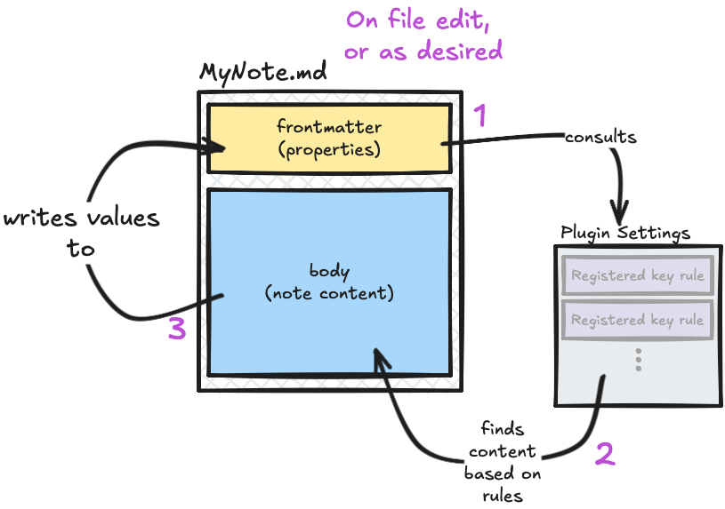

Looking back and checking in on last year’s goals.
2025 in Data
Health
| Goal | Tracked | Result | |
|---|---|---|---|
| Workouts | >= 183 | 189 | ✅ |
| Eating out | <= 156 | 194 | ❌ |
| Sodas/Drinks | <= 156 | 281 | ❌ |
| Sleep | Move forward | Almost identical as last year | ❌ |
While this looks bad, it is more of a continuation of where I was already at on those things. Note the percent change for the 3 variables all moved toward zero. This was the most stable year on record, in a way.

Creation
| Goal | Tracked | Result | |
|---|---|---|---|
| Columns written | ~18 | 14 | 🟡 |
| New notes written | >= 300 | 325 | ✅ |
| Podcasts made | = 12 | 3 | ❌ |
Grad school took the place of a lot of creative time this year. That said - a lot of this year’s creation also happened on tracks I wasn’t expecting. The table doesn’t really do this year justice. See 2025 in Projects below.
Consumption
| Goal | Tracked | Result | |
|---|---|---|---|
| Books read | >= 20 | 17 | 🟡 |
| New movies | >= 36 | 22 | ❌ |
| TV sessions | ~ 75 | 93 | 🟡 |
| Videogames | ~ 3 | 4 | ✅ |
These goals weren’t super firm. They were more like, guidelines.
Social
Last year I said I realized I wasn’t really tracking social outings like I had been. This trend continued in 2025. We did some neat stuff. I started organizing work outings, which was cool. Did a couple of golf trips, an escape room or two, played pool with friends, went bowling a few times, went to a Royals game, took a ride with Joe in his spaceship car. I think on the whole I hit most of my goals with this, in retrospect, but this category could use some more thought in the future.
2025 in Projects
I mostly nailed it this year.
| Goal | Result |
|---|---|
| Learn 2 new coding languages | I did do one! |
| Model & 3D print something | Wildly successful |
| Build a new puzzle box | Wildly successful |
| Finish the basement | Wildly successful |
| Succeed at school | Wildly successful |
Looking at individual projects…
Moving
In Column 474 I wrote about moving. That was the biggest thing this year. Changing houses is exhausting. However it has been so very worth all the trouble and expense. Our new house and our new circumstances have been nothing short of The American Dream.
We are in a very good spot in the world and in our lives. It feels good.
Basement Ceiling & Gym
In Column 467 I wrote of a goal to finish the basement. I did that. Then I switched basements. Then I fixed the new basement.
I put a gym where a storage room used to be:

I removed drop tile ceiling, bought back 10 inches of headroom, and added some cove lighting:

Default Meals
This project started in January, but got put on the back burner until after I paused grad school for a while. I’ve now been using the default meals every-other-week or so for the past couple months. They’re getting better almost every time I cook them.
This whole sentence is a link to the public-facing spreadsheet.

Pandora’s Box
Now that I’ve debuted the 2025 Puzzle Box to family & friends, I’m happy to reveal it here:

I wrestled and wrestled with this, working toward something I could produce multiple copies of. Despite having the puzzle parts of this figured out since early October, I barely finished on time. However - they are some of the coolest things I’ve ever made. I’m hoping to make more, but not until I do a redesign to make the assembly faster & easier while making the puzzle box a bit less prone to accidental breakage, which I suspect could happen with these.
Auto-properties (Obsidian plugin)
This one came as a total surprise at the very end of the year. I haven’t mentioned it on this before because it went from “gee whiz it would be nice if this thing existed” to “okay there I made it” over the course of about 24 hours. I made a1 plugin for Obsidian - currently awaiting approval.

What’s most crazy to me about it is how much of a difference it has made in my regular project management workflow. The whole idea of the “Next Action” list makes sense to me now.
Other Cool Stuff
- We did a really great family trip to Colorado with my whole family & it was an excellent time - a highlight of the year
- I successfully transitioned some colleagues into genuine buddies
- Melissa’s new job is great and she’s finding new levels of success - doing some really really cool stuff
- Melissa’s quartet is the 27th best in the world… in the world
- We took a Disney cruise with the boys
- Hollow Knight: Silksong came out after 7 years - and was a masterpiece
- I took2 7 of the 10 classes I’ll need to get a Master’s in Data Analytics
- Krista and Dalty became parents and their kid is disgustingly cute
Top 5: Tracking Goals in 2026
Again nothing dramatically different from last year here.
5. Content Creation
- Write 18 Columns
- Add 300 new notes
- Do a podcast
4. Content Consumption
- Read 20 books
- Watch 30 new movies
- Play through 3 videogames
- Watch ~6 new TV shows
3. Social
- Capture 52 quotes
- Do 26 fun outings (e.g. bowling, golfing, etc)
2. Health
- Move forward my average bed and wake time to 11:00 and 7:00, respectively
- Work out >= 183 times - every other day
- Eat out <= 183 times
- Drink <= 183 trackable drinks
1. Streaks
End 2026 with a 365 day “Used Streaks” streak.
Top 5: Project Goals in 2026
5. Pandora’s Box V2
Pandora’s Box was a success - but mostly as a learning experience. I will be clean sheet redesigning the box and trying to make the whole thing much more assembly-friendly. I’d still like to be able to produce copies for more folks.
4. House Work!
Continue sprucing up the new house. We’ve got many years planned for this place, and want to continue to make it “ours”.
3. Finish Grad School
This will be cool.
2. Puzzle Box 2026
Naturally I’ve already spent many hours thinking about this. I think I’ve got the general idea down already.
1. Gillespie’s 2026 - A Second a Day
I missed out on continuing my second-a-day videos during the years where I would most want them. The second best time to plant a tree is today.
Quote:
What is Fort Knox? I’ve never played Fortnite before. - My 7 year old
Decorations are not important in the shop. All we need are Big Macs, Big Macs, Soda, Money! - My 7 year old, who gets a lot of traction in the quote section